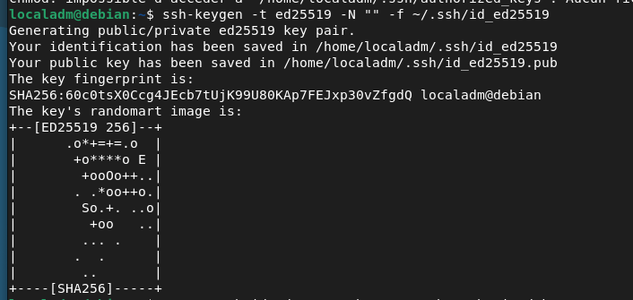
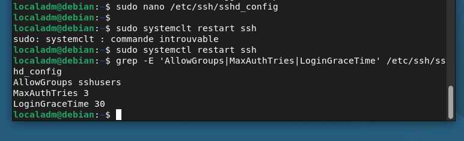
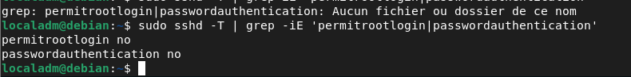
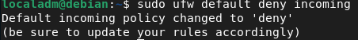
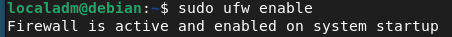
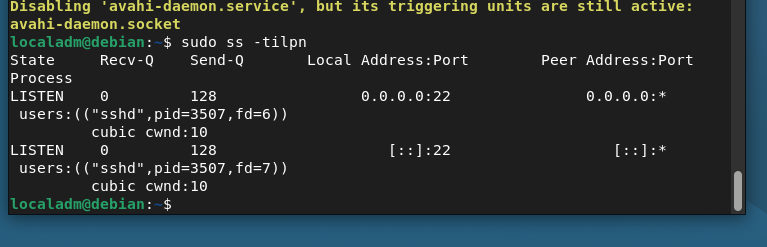
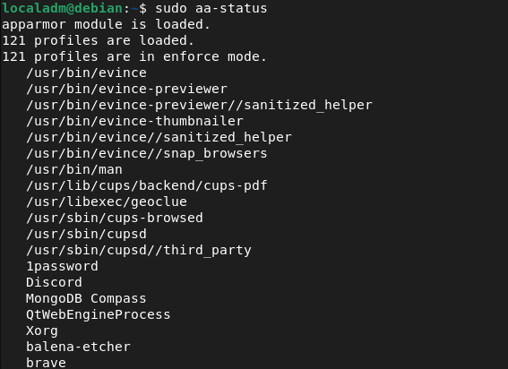
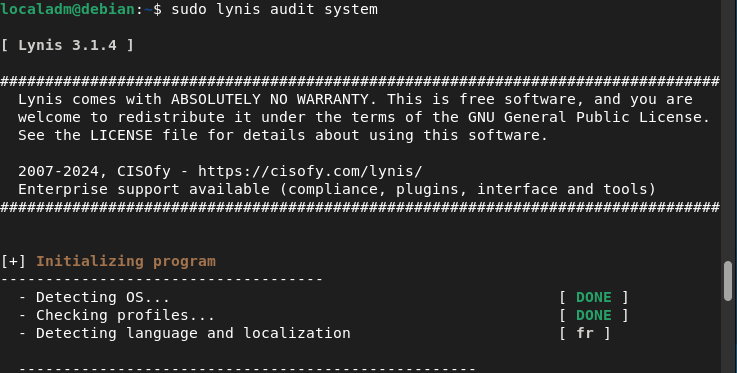

Contexte et méthode
Une Debian fraîchement installée reste trop ouverte pour un serveur : connexion SSH par mot de passe, services réseau inutiles, aucun pare-feu. J'ai suivi une démarche en trois temps :
- MesurerMise à jour du système et audit initial avec
Lynis 3.1.4. - DurcirSSH, pare-feu, Fail2ban, services, AppArmor.
- VérifierChaque mesure est contrôlée par une commande, puis un second audit Lynis compare l'avant et l'après.
Démo : le durcissement en accéléré
Les commandes ci-dessous rejouent le TP dans l'ordre. Les sorties sont résumées à partir de mes captures.
SSH : clé uniquement, root interdit
La clé ED25519 remplace le mot de passe : elle est plus robuste et plus rapide que RSA. L'accès est ensuite limité à un groupe dédié, sshusers.
# Seuls les membres du groupe sshusers peuvent se connecter AllowGroups sshusers # Limiter les essais et le temps pour s'authentifier MaxAuthTries 3 LoginGraceTime 30 # Pas de connexion root directe, pas de mot de passe PermitRootLogin no PasswordAuthentication no
Un premier contrôle avec sshd -T montrait que PermitRootLogin et PasswordAuthentication n'étaient pas encore désactivés. Modifier le fichier ne suffit pas : il faut vérifier la configuration effectivement appliquée par le service.



Pare-feu UFW et Fail2ban
Politique « deny by default » : tout ce qui entre est refusé, sauf SSH, ouvert explicitement pour garder l'accès à distance. C'est le principe du moindre privilège appliqué au réseau.
Fail2ban surveille les journaux d'authentification et bannit temporairement les adresses IP qui enchaînent les échecs de connexion.


Services inutiles et AppArmor
ss -tulpn listait avahi-daemon (découverte mDNS) et cups (impression) en écoute. Ces deux services n'ont rien à faire sur un serveur : ils sont arrêtés et désactivés. Ensuite, seul sshd écoute encore.




Synthèse des mesures
| Axe | Mesure appliquée | Vérification |
|---|---|---|
| Mises à jour | Système à jour | apt update |
| Audit | Lynis avant / après | lynis audit system |
| SSH | Clé ED25519 seule, groupe sshusers, root et mots de passe interdits | sshd -T |
| Brute force | Fail2ban actif | systemctl status fail2ban |
| Pare-feu | UFW, deny par défaut, seul SSH entrant | ufw status verbose |
| Services | avahi-daemon et cups désactivés | ss -tulpn |
| Confinement | AppArmor : 121 profils en enforce | aa-status |
Bilan
Compétences mobilisées
- Administration Linux en ligne de commande
- Sécurisation des accès distants (SSH, clés)
- Filtrage réseau et principe du moindre privilège
- Audit et preuve par la mesure
Ce que j'en retiens
- Toujours garder un accès (ici SSH autorisé avant d'activer le pare-feu).
- Vérifier la configuration réellement appliquée, pas seulement le fichier.
- Moins de services en écoute, c'est moins de portes d'entrée.